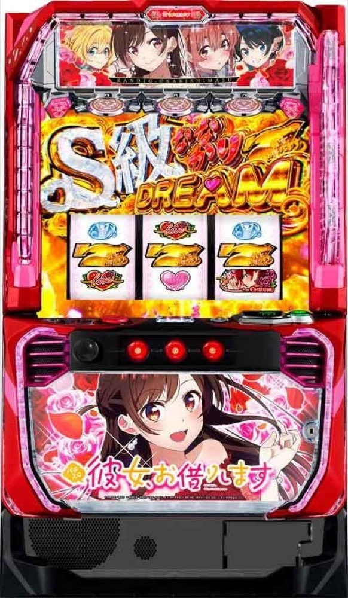

Lパチスロ 彼女、お借りします
CZから疑似BONUSへ。2Gの1GレンCHANCEと66G引き戻しでガチ恋ループをつなぐ。
- 導入
- 2026年9月
- メーカー
- SANKYO
- 分類
- パチスロ
主要スペック
15G＋α・約56%のレンカノCHALLENGE、10G・約75%の妄想DTチャレンジから純増約5.0枚/Gの疑似BONUSへ。BONUS中のストック、2Gの1GレンCHANCE、4回ごとのエピソード、66G引き戻し、ななかりDREAMとS級出玉トリガーまでを実機順に体験できます。
- レンカノCHALLENGEは15G＋α・成功期待度約56%
- 1GレンCHANCEは1セット2G・成功期待度約40%
- BONUS後66Gは通常約25%・ユメカノモード約58%で引き戻し
Lパチスロ 彼女、お借りしますの見どころと計算条件
15G＋α・約56%のレンカノCHALLENGE、10G・約75%の妄想DTチャレンジから純増約5.0枚/Gの疑似BONUSへ。BONUS中のストック、2Gの1GレンCHANCE、4回ごとのエピソード、66G引き戻し、ななかりDREAMとS級出玉トリガーまでを実機順に体験できます。
スマスロ かのかりを数字で早分かり
疑似BONUS、2Gの1GレンCHANCE、66G引き戻し、ななかりDREAMとDREAM TIMEを個別に記録します。
30秒で分かるスマスロ かのかり
疑似BONUS中にストックを集め、2G・約40%の1GレンCHANCEと66G引き戻しでBONUSをつなぐガチ恋ループ型です。
こんな遊び方に向いている
- BONUS後の2GジャッジをPUSHで繰り返したい
- 通常ストックと成功濃厚の1G恋を比べたい
- 4回目エピソードからユメカノ・S級を目指したい
遊ぶ前に確認したいこと
- CZ・BONUS・1G連・引き戻しの主要値は公開値
- ストック数やBONUS種別比率は代表値
- 旧5区間の汎用STフローは廃止
通常時と2種類のCZ
通常時は100G・300Gなど百の位が奇数のゾーン、レア役、小役変換からCZまたはBONUSを目指します。ハートメーターMAX時は小役変換高確へ移行し、チャンス目を強チャンス目・ガチ恋目へ変換する可能性があります。
レンカノCHALLENGEは15G＋α・約56%で、小役成立時にオーラ色を上げて最終PUSHへ。妄想DTチャレンジは10G・約75%で、小役ごとにBONUSを一発抽選します。
REG・かのかりBONUS・ななかりDREAM
REGはベルナビ10回・約70枚、かのかりBONUSは30G・約150枚。どちらも純増約5.0枚/Gで、消化中は1GレンCHANCEまたは成功濃厚の1G恋ストックを抽選します。初当りBIGはレンCHANCEを1個持って開始します。
金7揃いのななかりDREAMは平均約80Gのゲーム数上乗せ後にかのかりBONUSへ進む2部構成。平均期待枚数約550枚として、上乗せゲーム数とBONUS出玉を別イベントで表示します。
1GレンCHANCEとエピソードBONUS
1GレンCHANCEは1セット2G・成功期待度約40%。1G目は小役でチャンス、2G目は小役成立でBONUS濃厚です。1G恋ストックは成功濃厚として同じ2Gを進め、レア役成功時はななかりDREAMも抽選します。
成功4回目はヒロインエピソード、8回目はスペシャルエピソードが濃厚。通常へ戻らずに5回連続で失敗した場合は、6回目の1GレンCHANCEを成功濃厚として扱います。
66G引き戻しとユメカノモード
ストック消化後はBONUS終了から66G以内の引き戻し区間へ。通常は約25%、ユメカノモードは約58%でかのかりBONUS以上への復帰を判定します。
スペシャルエピソードやDREAM TIME後はユメカノモードへ進み、引き戻し成功時はななかりDREAM・S級出玉トリガーにも期待できる専用イベントとして表示します。
DREAM TIMEとS級出玉トリガー
エンディング後のDREAM TIMEは15G・平均約2.5ストックで、突入時に1G恋を1個獲得。獲得ストックを使った後はユメカノモードへ進みます。
S級ななかりDREAMは平均約280G、S級DREAM TIMEは平均約6ストック。公開されていない突入率、BONUS振り分け、追加ストック率は、公開平均から大きく外れない体験用代表値です。
固定条件と収支
- 約31.0G/50枚・1,000円46枚貸し・5.2枚交換で固定
- 設定1〜6から均等抽選
- BONUS枚数・ストック・1G連成功回数を別表示
- 19,000枚到達時はコンプリート表示
平均Gと投資目安の計算
掲載するかのかりBONUS初当り約1/269は設定1基準です。当サイトでは50枚あたり31G、1,000円46枚貸しの固定条件から、設定1基準の平均投資目安を約9,400円と計算します。
シミュレーターでは設定1〜6を均等抽選します。設定1〜6で公開されている初当り値を個別に使います。公開されていない特化ゾーン・上位到達率の設定差は加えません。 換金は5.2枚交換で固定し、結果とランキングに設定を表示します。
シミュレーション結果の見方
当るまでCZ（レンカノCHALLENGE／妄想DTチャレンジ）・かのかりBONUSまでのゲーム数
設定設定1・2・3・4・5・6から抽選された今回の設定
上位到達S級出玉トリガーとS級DREAM TIMEへの到達
最終収支差枚と5.2枚交換の収支目安
結果は自動で「マイ記録」に保存され、同じ機種を何回試したか、最高収支、勝率をあとから確認できます。
簡易シミュレーターについて
CZ（レンカノCHALLENGE／妄想DTチャレンジ）・かのかりBONUS・S級DREAM TIMEの流れを固定条件で体験できます。JavaScriptを有効にすると、この位置にシミュレーター、演出、マイ記録、機種別ランキングが表示されます。
結果は娯楽・確率理解のための参考表示です。金銭的価値や交換価値はなく、実際の勝敗や収支を保証しません。18歳未満の方の利用はお控えください。
スマスロ かのかりのよくある質問
スマスロ かのかりはどんな台？
15G＋α・約56%のレンカノCHALLENGE、10G・約75%の妄想DTチャレンジから純増約5.0枚/Gの疑似BONUSへ。 レンカノCHALLENGEは15G＋α・成功期待度約56%が主な確認ポイントです。
スマスロ かのかりの平均投資目安は？
設定1基準のかのかりBONUS初当り約1/269と、50枚あたり31G・46枚貸しの固定条件から、平均9,400円を目安として表示します。実際の設定や遊技状況で結果は変わります。
設定とゲームの流れはどう抽選する？
開始時に設定1・2・3・4・5・6から1つを均等抽選し、CZ（レンカノCHALLENGE／妄想DTチャレンジ）、かのかりBONUS、S級出玉トリガー、S級DREAM TIMEの順で到達を判定します。設定は最終結果とランキングに表示します。
収支はどう計算する？
1,000円46枚貸し・5.2枚交換の固定条件で投資、換金、収支目安を計算します。実店舗の再プレイ、持ちメダル、端数処理は含みません。